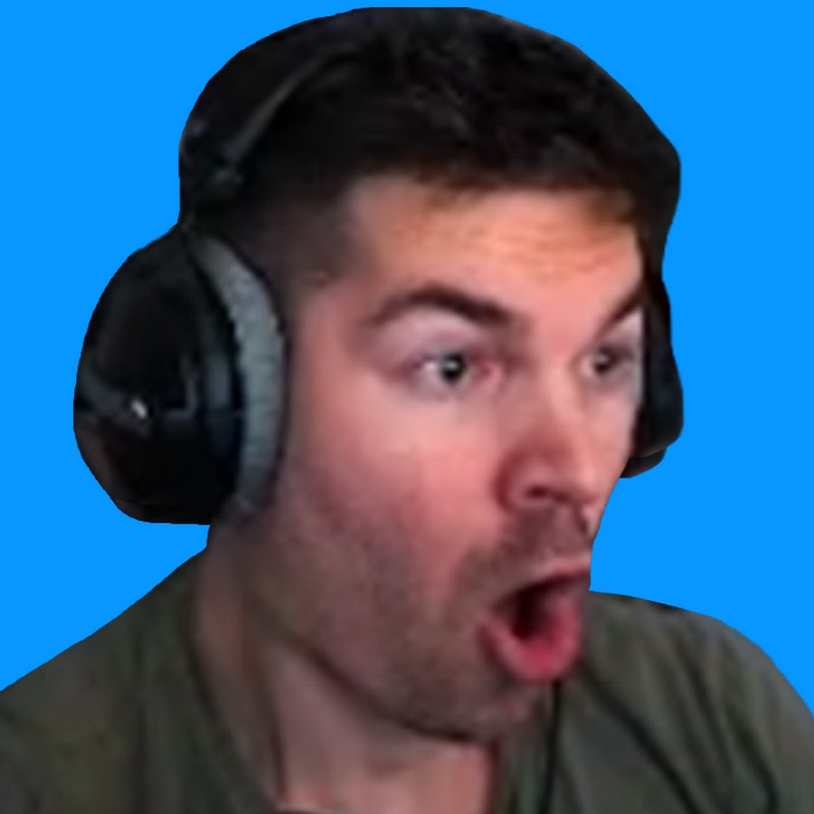
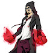

Historia de Sova
Sova es proveniente de la tundra del eterno invierno de Rusia.
Este rastrea, encuentra y elimina a sus enemigos con gran eficiencia y precisión.
Su arco personalizado y sus increíbles habilidades de exploración impedirán que sus enemigos puedan esconderse de él.
Habilidades especiales
 Q: PROYECTIL ELÉCTRICO
Q: PROYECTIL ELÉCTRICO
EQUIPA un arco con un proyectil eléctrico y DISPARA para lanzarlo.
El proyectil detonará al impactar y dañará a los jugadores cercanos.
MANTÉN PRESIONADO EL BOTÓN DE DISPARO para aumentar el alcance del proyectil.
Usa el DISPARO SECUNDARIO para añadir hasta dos rebotes a su trayectoria.
 E: PROYECTIL RASTREADOR:
E: PROYECTIL RASTREADOR:
EQUIPA un arco con un proyectil rastreador y DISPARA para lanzarlo.
El proyectil se activará al impactar y revelará la ubicación de los enemigos cercanos que estén dentro de su alcance.
MANTÉN PRESIONADO EL BOTÓN DE DISPARO para aumentar el alcance del proyectil.
Usa el DISPARO SECUNDARIO para añadir hasta dos rebotes a la trayectoria de la flecha. C: DRON BÚHO
C: DRON BÚHO
EQUIPA un dron búho y DISPARA para desplegarlo y controlar su movimiento.
Mientras lo controlas, DISPARA para lanzar un dardo marcador que revelará la ubicación de cualquier jugador al que impacte. X: FURIA DEL CAZADOR
X: FURIA DEL CAZADOR
EQUIPA un arco con tres ráfagas de energía de largo alcance que atraviesan las paredes.
DISPARA para lanzar una ráfaga de energía frente a Sova que infligirá daño y revelará la ubicación de los enemigos impactados.
Puedes VOLVER A USAR esta habilidad hasta dos veces más mientras su contador esté activo.
| Jugadores |
|---|
| Average Jonas |
| Hiko |
| Doblat |
| Sinatra |
| Sacy |
| Flecha reveladora |
| Dardo eléctrico |